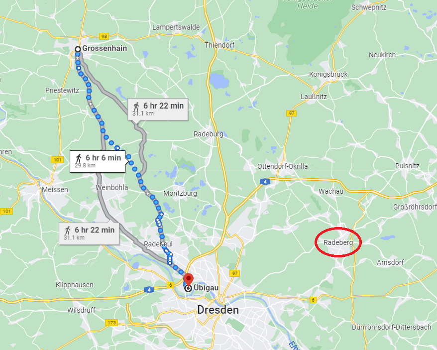
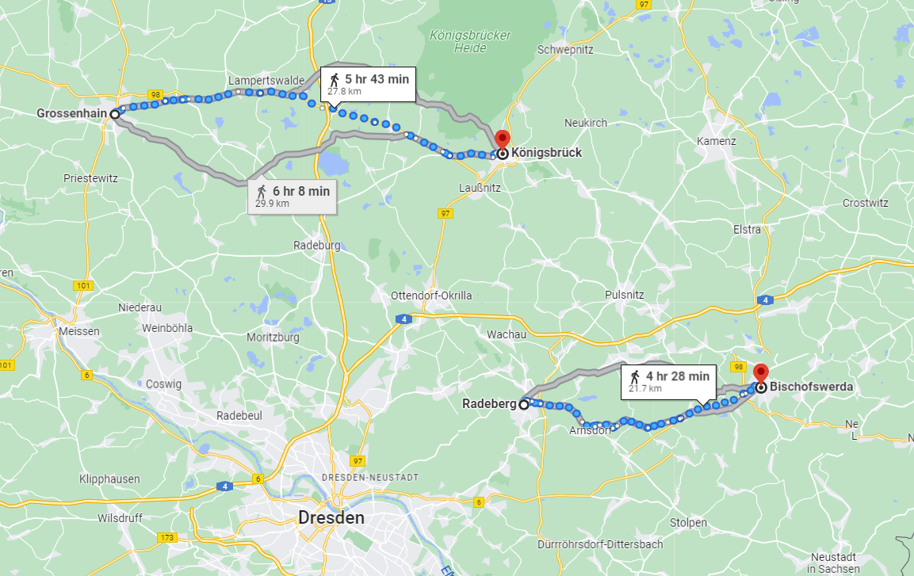
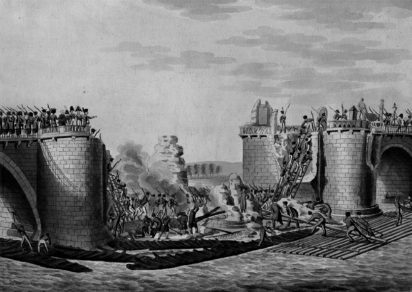
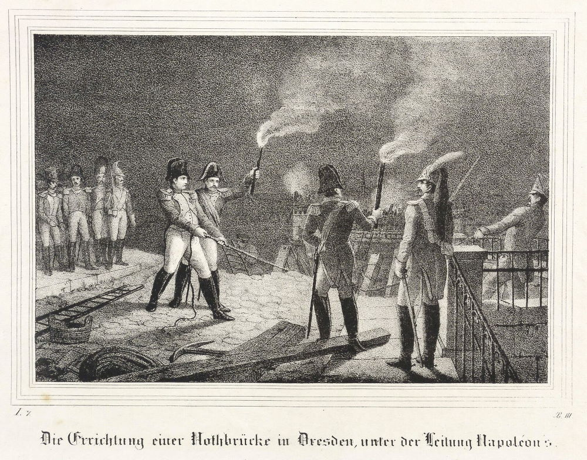

바우첸을 향하여 (7) - 비트겐슈타인의 결정
게시: 2023-01-23T06:30:43+09:00
밀로라도비치가 프랑스군의 기습 도하 작전을 막지 못하고 쩔쩔 매던 5월 9일, 프로이센군의 총사령관은 블뤼허가 아니었습니다. 원래 부상을 입고 있었던 블뤼허는 이 날 특히 상태가 좋지 않아 병석에 드러누웠고, 지휘권을 다른 사람에게 이양해야 했습니다. 상식적인 관례에 따른다면 프로이센 야전군 내의 서열 2위인 요크 대공이 임시 사령관이 되어야 했는데, 뜻밖에도 일개 참모에 불과한 그나이제나우가 지휘권을 이양받았습니다. 이는 프로이센군 위아래 모두가 블뤼허의 모든 작전은 어차피 그나이제나우에게서 나온다는 것을 알고 있기 때문에 벌어진 일이었습니다. 그러나 전통이라는 것은 무시할 수 없는 것이었고 요크 대공 본인도 새파랗게 아랫것인 그나이제나우로부터 명령을 받아야 한다는 것에 무척이나 불쾌하게 생각했습니다. 하지만 평소 전통과 권위에 대해서는 어지간하게 따지고 들던 국왕 프리드리히 빌헬름부터가 다행히도 그나이제나우의 임시 지휘권 행사에 대해 모른 척 넘어갔기 때문에 당장은 그냥 좋게 넘어갈 수 있었습니다. 그러나 이렇게 자주 반복되던 그나이제나우의 자율적 지휘권 행사는 결국 그 다음 해에 가서 결국 문제를 낳게 됩니다. 하필 5월 9일 아침 프로이센군은 전날 비트겐슈타인에게서 받은 명령대로 그로스엔하인(Großenhain)으로 행군을 시작한 상태였습니다. 오후 늦게 밀로라도비치의 SOS 요청을 받은 그나이제나우는 짜증이 났습니다. 가뜩이나 러시아군에 대해 반감이 대단했던 그에게는 이 상황이 너무나 어처구니 없었습니다. 그로스엔하인으로 가라고 해서 거기 갔더니 이젠 다시 남쪽으로 내려와 러시아군이 담당하기로 했던 위비가우를 지켜달라? 위비가우는 러시아군 본대로부터 훨씬 더 가까운데 대체 왜 러시아군 본대가 돕지 않고 프로이센군이 도와야 하는가? 무엇보다, 위비가우는 지금부터 강행군을 해도 다음날 새벽에나 도착할 정도로 먼 곳이라서 프로이센군이 당도할 즈음이면 이미 프랑스군은 다 강을 건넌 뒤일텐데?

(그로스엔하임과 위비가우 사이의 거리는 30km 정도로서, 정상적인 행군에서라면 하루 거리였습니다. 그에 비해 붉은 색 원 안의 라더베르크가 훨씬 더 가까웠습니다.) 그나이제나우는 프로이센군에게 즉각 위비가우로의 행군을 명령하시는 대신, 연합군 총사령관이자 저 남쪽 라더베르크(Radeberg)에 주둔하고 있을 비트겐슈타인에게 편지를 보냈습니다. 그 내용은 대충 이런 것이었습니다. "장군께서 프랑스군이 위비가우에서 강을 건넌 직후에 그 엘베 강가 평원에서 프랑스군과 싸우려는 것이라면 프로이센군은 내일 아침 그 우익에 나타나겠습니다. 하지만 싸울 계획이 아니라면 우린 알아서 행동하겠습니다." 이건 다분히 '비트겐슈타인 너에게 싸울 용기가 있다면 내 손에 장을 지진다'라는 비아냥이 섞인 편지였습니다. 그리고는 정말 러시아 본대의 집결지인 라더베르크(Radeberg)로 프로이센군 전체에게 다음 날 새벽 2시에 행군을 시작하라고 명령했습니다. 다행인지 불행인지 프로이센군이 행군을 시작하기 30분 전인 새벽 1시 반, 비트겐슈타인으로부터 답신이 도착했습니다. 프로이센군에게 남쪽이 아니라 동쪽으로 27km 정도 떨어진 쾨니히스브뤽(Königsbrück)으로 이동하라는 것이었습니다. 러시아군 본대도 라더베르크를 떠나 동쪽으로 22km 정도 떨어진 비숍스베르다(Bischofswerda)로 이동한다고 했습니다. 비트겐슈타인은 역시나 당장 나폴레옹과 결전을 벌일 자신은 없었던 것입니다.

(비트겐슈타인이 명령한 프로이센군과 러시아군의 이동 동선입니다.) 비트겐슈타인이 엘베 강변에서 나폴레옹과 싸우는 것을 포기하고 이렇게 동쪽으로 더 후퇴하기로 한 결정은 당연히 그나이제나우를 제외한 많은 이들에게 실망과 분노를 안겨 주었습니다. 물론 그나이제나우는 '내 저럴 줄 알았다'라며 스스로의 똑똑함에 뿌듯해 했지요. 이 실망의 물결에는 알렉산드르와 프리드리히 빌헬름도 동참했습니다. 그들은 나폴레옹이 엘베 강변 어디에선가 싸움이 벌어질 것을 기대하고 다시 서쪽으로 되돌아와 있었기 때문이었습니다. 이때 비트겐슈타인에게 실망한 알렉산드르는 다시 고질병이 도져 비트겐슈타인의 작전 계획에 좀 더 적극적으로 참견하기 시작했습니다. 그나저나 비트겐슈타인은 왜 갑자기 겁장이가 되어 후퇴를 결정했던 것일까요? 물론 비트겐슈타인은 겁장이가 아니었습니다. 그의 사령부에는 코삭 기병들이 가져오는 정보들이 속속 모여들고 있었는데, 확실히 나폴레옹은 드레스덴 인근의 위비가우 뿐만 아니라 드레스덴에서 하류 쪽으로 70km 정도 떨어진 벨게른(Belgern)에서도 임시 교량을 건설하고 있었습니다. 게다가 비텐베르크로 향한 네의 병력도 거기서 엘베 강을 건널 태세였습니다. 비트겐슈타인은 나폴레옹이 그렇게 여러 곳에서 도강하여 자신의 우익을 포위할 계획이라고 판단했기 때문에 그 수에 말려들지 않으려 후퇴하기로 한 것입니다. 그런데 그런 결정은 과연 현명한 것이었을까요? 그다지 좋은 결정은 아니었던 것 같습니다. 러시아군이 버리고 간 1/3 정도가 부서진 부교를 하룻만에 보강하여 만든 부교는 당연히 크고 튼튼한 것은 아니었습니다. 그러다보니 밀로라도비치의 러시아군이 물러난 뒤 본격적으로 부교를 강 건너편에 연결하여 저녁 6시부터 그 다음날 새벽 6시까지 밤을 세워 병력을 도강시켰지만, 프랑스군은 5월 11일 아침 엘베 강 우안에 추가로 4만 정도를 옮기는 것이 고작이었습니다. 특히 대포들은 이 부실한 부교를 절대 통과할 수 없었습니다. 원래 나폴레옹은 위비가우에서 승리를 거둔 9일 밤, 당장 다음날 새벽부터 포병대를 강 건너로 이동시키라고 명령했지만 각종 케이블과 닻 등의 필수 자재가 부족한 상태로 구축된 위비가우의 부교에서는 불가능한 일이었습니다. 결국 프랑스군은 큰 나룻배에 대포를 1문씩 실어 느릿느릿 강을 건너게 할 수 밖에 없었습니다. 제대로 된 하역장이 없는 진흙투성이 강가에서 무겁고 거추장스러운 대포를 나룻배에 싣고 내리는 일은 무척이나 시간이 걸리는 일이었습니다. 게다가 대포는 역시나 무거운 포탄과 화약 없이는 쇳덩어리에 불과한 물건이었습니다. 덕분에, 11일 아침까지도 프랑스군은 엘베 강 우안에 중화기가 거의 없는 상태로 노출되어 있었습니다. 이런 점들을 고려해볼 때, 만약 비트겐슈타인이 원래의 작전 계획대로 엘베 강변에서 싸웠다면 승패는 알 수 없었을 것입니다. 그나이제나우의 프로이센군은 10일 오전 중에는 위비가우 일대에 나타날 수 있었고, 러시아군 본대도 10일 오후까지는 충분히 현장에 도착할 수 있었습니다. 10일 오후, 러시아군과 프로이센군이 합류하여 한꺼번에 10만에 가까운 대군으로 엘베 강변에 나타났다면 나폴레옹은 대포도 갖추지 못한 4만 남짓의 병력으로 싸워야 했을 것입니다. 아마도 아스페른-에슬링 전투와 같은 결과가 났겠지요. 하지만 역사에 만약이라는 것은 없는 법입니다. 5월 10일 새벽, 비트겐슈타인이 후퇴를 결정하면서 밀로라도비치는 엘베 강 우안에 위치한 드레스덴의 신시가지인 노이슈타트에서도 깔끔히 철수했습니다. 덕분에 프랑스군은 처음에 포기했던 드레스덴의 아우구스투스 다리의 수리를 시작할 수 있었고, 나폴레옹이 다리 옆에 직접 서서 초조하게 지켜보는 가운데 유능한 프랑스 공병대는 이 교량 보수 공사를 10일 저녁까지 완료할 수 있었습니다. 그래서 10일 밤부터는 프랑스군은 엘베 강 우안으로 글자 그대로 쏟아져 들어갈 수 있었습니다.

(당시 나폴레옹이 얼마나 신속한 도강을 재촉했는지는 파괴된 아우구스투스 다리를 건너는 프랑스 보병부대의 모습을 그린 이 그림에서도 드러납니다. 아직 수리가 되지 않았지만 보병들은 사다리를 놓고 다리를 건너고 있습니다.)

(실제로 나폴레옹이 직접 저렇게 밧줄을 잡아당기기까지 했는지는 모르겠습니다만, 5월 10일 저녁 늦게까지 나폴레옹은 아우구스투스 다리의 수리를 직접 감독했습니다. 나폴레옹이 이토록 중요하게 여기는 곳을 이렇게 쉽게 내줬다는 점에서 비트겐슈타인의 판단이 더욱 아쉽습니다.)
대체 비트겐슈타인은 어쩌자고 이렇게 일을 망쳐놓았을까요? 아무리 나폴레옹이 북쪽에서 우회를 시도한다고 해도, 천혜의 장벽인 엘베 강을 포기한 것은 너무나 큰 손해였을 텐데요. 물론 비트겐슈타인은 나름대로 생각이 있었습니다.
Source : The Life of Napoleon Bonaparte, by William Milligan Sloane Napoleon and the Struggle for Germany, by Leggiere, Michael V
https://altesdresden.de/hist_idx.cgi?action=house&id=aubaz00&redirect=true